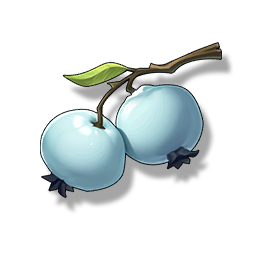

Bell-Borne Geochelone's Child
Missions

A rare material from the Bell-Borne Geochelone, which only resonates at a specific frequency. It's said that in the hands of a skilled apothecary, it can be refined into a miraculous medicine.
A rare material from the Bell-Borne Geochelone, which only resonates at a specific frequency. It's said that in the hands of a skilled apothecary, it can be refined into a miraculous medicine.